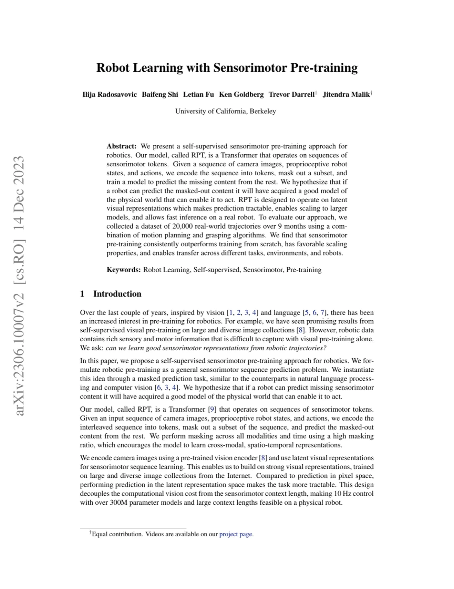
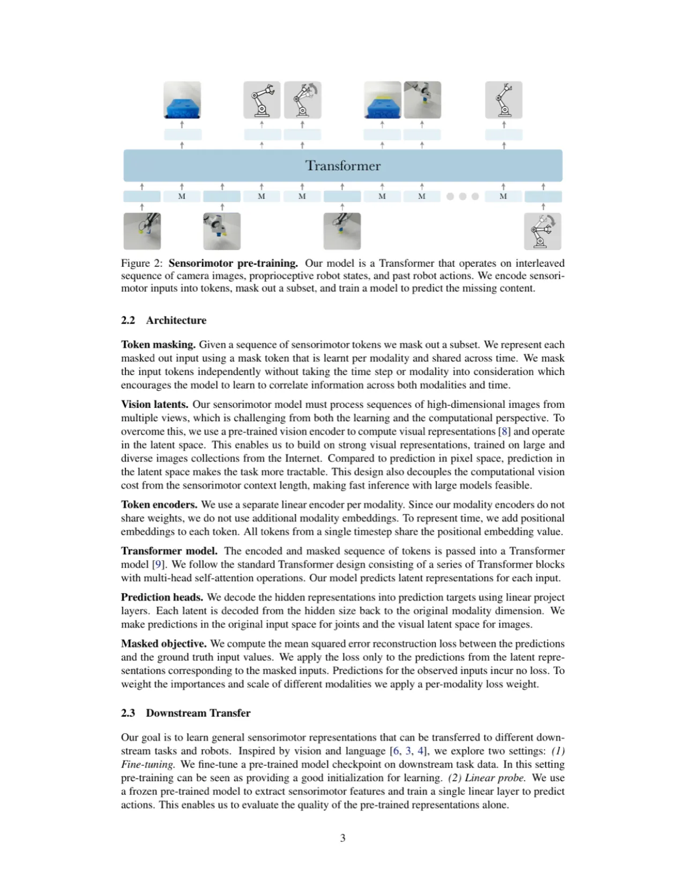
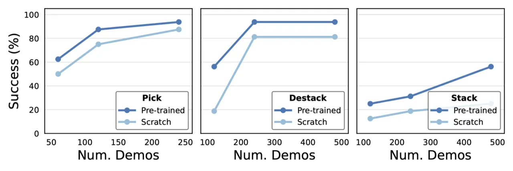
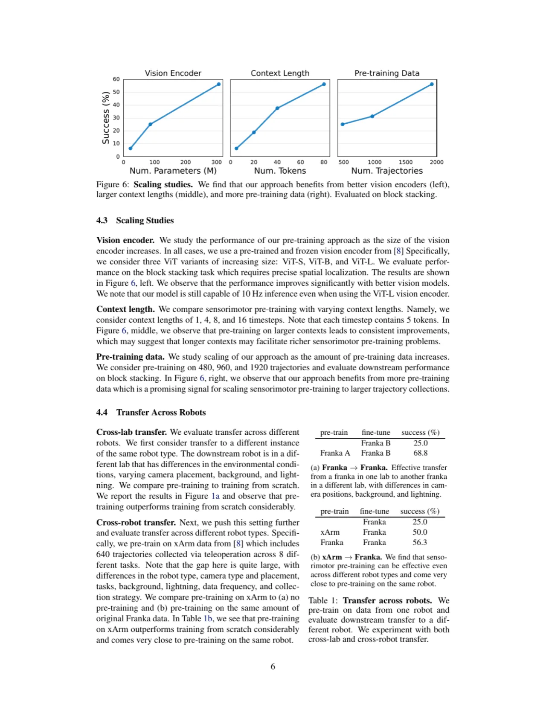

本文提出 RPT（Robotic Pre-trained Transformer），一种针对机器人操作的自监督感知运动预训练方法。模型将多视角图像、本体感知状态与动作编码为 sensorimotor tokens，通过掩码预测任务在 2 万条真实机器人轨迹上预训练，再以 behavior cloning fine-tune 到下游任务。实验证明预训练在所有任务上持续优于从零训练，堆积任务成功率提升约 2×，且具备良好的跨任务、跨机器人迁移能力。
自监督预训练在视觉和语言领域带来了巨大突破，但在机器人学习领域尚未得到充分探索。机器人操作需要同时处理多模态感知（图像、本体感知）和动作序列，直接从零训练样本效率低、难以在任务间迁移。
"We ask: can we learn good sensorimotor representations from robotic trajectories? Our key hypothesis is that if the robot can predict the missing content it has acquired a good model of the physical world."

在机器人操作这一数据稀缺场景中，预训练能否帮助模型学到可迁移的物理世界模型？这是 RPT 试图回答的核心问题。与视觉预训练（ViT、MAE）不同，RPT 预训练的对象是跨模态、跨时间步的感知运动序列，旨在捕捉动作与感知之间的因果依赖关系。
RPT 分为两个阶段：（1）在大规模真实轨迹上进行感知运动掩码预训练；（2）以 behavior cloning fine-tune 到特定下游任务。整个流水线无需任务标签或语言监督，仅依赖机器人自身采集的轨迹数据。

每个时间步包含三个模态：多视角图像、本体感知状态（关节角度等）、动作。图像经预训练视觉编码器（ViT）提取 latent 表示，与状态、动作分别线性映射为固定维度 token，按时间步交错拼接为序列输入 Transformer。这一设计将视觉编码器从感知运动上下文长度中解耦，使模型可使用 10× 更大的 context 而不增加视觉计算量。
"We predict in the latent representation space rather than the pixel space, which enables 10 times larger models."
对跨模态、跨时间步的 tokens 进行随机掩码（默认比例 0.9），训练模型从可见 tokens 预测被掩盖内容。对掩码 tokens，模型基于每个 token 的 hidden state 预测对应的原始值；对可见 tokens，直接重构原始输入以鼓励跨模态信息整合。掩码策略同时覆盖所有模态和时间步，迫使模型理解感知与动作之间的时序因果关系。
预训练完成后，将 Transformer 作为特征提取骨干，顶部接一线性层预测 10 步动作（自回归推理）。以 behavior cloning 在下游演示数据上微调，可选冻结或解冻视觉编码器。推理时模型以 10 Hz 运行在真实机器人，context 保持 300 tokens。
实验在 7-DoF 机械臂上进行，任务包括 Pick（单物体抓取）、Destack（拆叠）、Stack（堆积），涵盖物体位姿、形状、外观变化。评估指标为真实机器人执行成功率（%），与从零训练基线对比。

| 任务 Task | Scratch（从零训练） | RPT Pre-trained | 备注 |
|---|---|---|---|
| Pick（~240 demos） | ~78% | ~92% | 较易任务，相对增益适中 |
| Destack（~480 demos） | ~78% | ~92% | 中等难度，增益明显 |
| Stack（~480 demos） | ~60% | ~93% | "2x improvements in the block stacking task" |

论文还验证了两种迁移场景：
作者在项目页面中列举了四类典型失败：imprecise picking（抓取不精准）、imprecise stacking（堆叠不精准）、misaligned closures（闭合错位）、object slippage during manipulation（操作中物体滑落）。这些失败说明模型在精细操作方面仍有提升空间。
预训练数据全部来自同一实验室的单一机械臂平台（7-DoF 臂），任务仅涵盖 Pick / Bin Pick / Stack / Destack 四类桌面操作。尽管跨机器人实验展示了一定泛化能力，但数据多样性的不足可能限制更广泛场景下的迁移效果。
RPT 不使用语言指令或任务 ID，每次 fine-tune 对应单一任务。在需要语言理解或多任务调度的场景下，需要额外设计任务条件化机制。
300M 参数模型在真实机器人上以 10 Hz 运行，推理效率已属可接受范围，但预训练阶段的计算资源需求较高。此外，视觉编码器使用在 Ego4D（人类第一人称视频）上预训练的 ViT，与机器人操控场景仍存在域差距，未来可用更多机器人数据专门预训练视觉编码器以进一步提升性能。